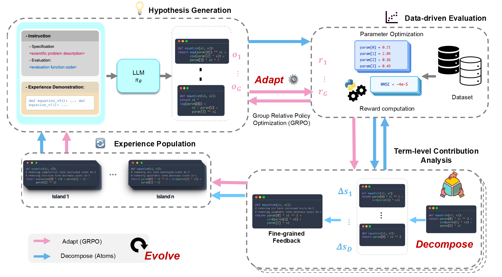
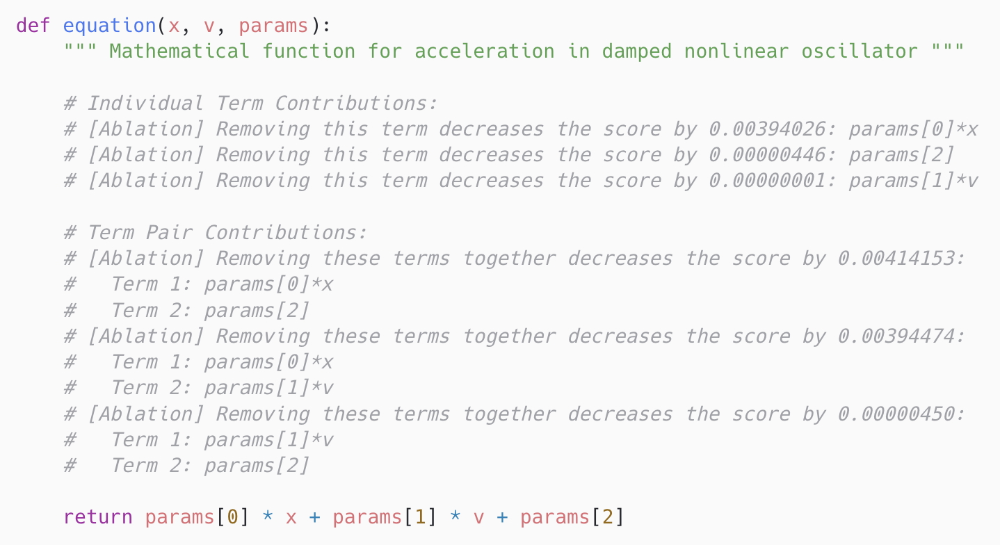
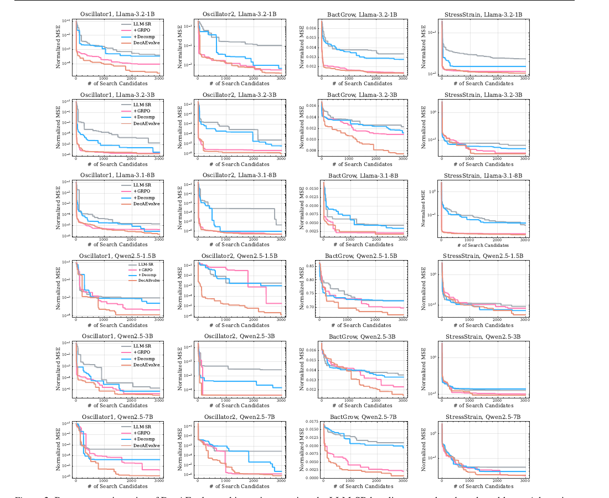
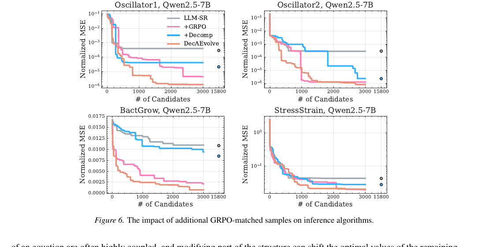

TL;DR
Equation discovery as a closed loop, not a static prompt.
DecAEvolve unifies three mechanisms inside an LLM-guided evolutionary search: decomposition turns a scalar reward into per-term contribution feedback; GRPO test-time adaptation distills the observed system into the policy through LoRA updates; evolution stores annotated programs in a multi-island buffer so future prompts condition on why things worked.
Decompose
Parse each program into an AST, isolate atomic terms, and quantify single-term and pairwise contributions via re-optimized ablations.
Adapt
Run GRPO with group-relative advantages and a KL anchor on LoRA adapters — test-time RL that aligns the policy with the data.
Evolve
Insert decomposition-annotated programs into a multi-island experience buffer that seeds the next prompt with structural evidence.
Motivation
Where LLM-based equation discovery breaks.
Existing LLM-SR systems treat the LLM as a fixed hypothesis generator and a scalar MSE as the only feedback. Two of the strongest signals available to the search are simply discarded.
The LLM never sees the system
Across thousands of search candidates, the policy weights are frozen. Whatever priors the model entered with — biased toward textbook oscillators, Michaelis–Menten kinetics, polynomial constitutive laws — are the priors it leaves with. There is no mechanism to internalize that this oscillator has a non-standard damping term, or that this growth curve breaks below a pH threshold.
Scalar rewards hide structure
A single MSE number says "good" or "bad" but not why. If a candidate scores well, was it the cubic term, the sinusoidal interaction, or the additive bias? Without that attribution, the next prompt can only retry whole equations and hope.
Framework
One iteration of DecAEvolve.
Generate a group of candidate programs → score them with BFGS-fit parameters → decompose the survivors into atoms and attribute credit → update the policy with GRPO using the resulting rewards → push annotated programs into a multi-island buffer that seeds the next prompt.

Method
Three coupled mechanisms.
Stage 1 (adaptation): for N iterations, generate, score, decompose, and update the LLM with GRPO. Stage 2 (search): freeze the adapted policy and run T more iterations of decomposition-guided evolutionary search.
1 — Decompose: programs → structured feedback
Each candidate function body is parsed with Python's ast module, intermediate assignments are inlined into the return expression, and the AST is traversed under three rules:
Split additive structure
Top-level + / − become term boundaries. The program is exposed as a linear combination of atoms um(x).
Preserve multiplicative subtrees
Products, divisions, and powers stay intact: p₀·sin(x)·x² is one atom. Operator precedence is respected.
Function calls are atoms
Unary operators and library functions (sin, exp, np.abs, …) are leaves of the atom set.
For each atom um, DecAEvolve constructs an ablated program f\um, re-optimizes the remaining BFGS parameters on the data, and computes a marginal contribution:
The same construction over pairs (um, un) yields interaction contributions Δum,un, exposing redundancy versus synergy. Re-optimization is essential — with frozen parameters, removing a term can look catastrophic only because the rest of the equation was never allowed to compensate. Contributions are serialized as inline Python comments above the return statement, so executable semantics are unchanged but the next prompt now reads structural evidence.

params[0]·x dominates, that params[1]·v contributes almost nothing alone, and that the (params[0]·x, params[2]) pair carries even more signal than params[0]·x on its own.
2 — Adapt: GRPO at test time, with LoRA
Adaptation is reinforcement learning over a deterministic MDP whose state is a (prompt, prefix) pair, action is the next token, and reward is the bounded validation score
r(p, h) = exp(−MSE(h, 𝒟)) (floored at 0.01 for invalid completions). Each prompt samples G=64 completions, GRPO computes a per-prompt baseline b(p) and group-relative advantages Ai = ri − b(p), and optimizes:
LoRA adapters (rank 16, α=16, dropout 0.05) carry all trainable parameters; the base model stays as the frozen reference πref. β=0.05 regularizes drift; together with the per-prompt baseline this produces low-variance, single-step updates that are safe to take during search itself.
3 — Evolve: annotated populations, multi-island buffers
The buffer 𝒫 = ⋃i 𝒫(i) is sharded into independent islands that diverge over time and prevent premature convergence. A new program is admitted to its source island only if it strictly beats that island's best score. Every 4 hours the worst-performing half of islands is overwritten with copies from a surviving island. Within an island, programs are clustered by score signature, sampled by Boltzmann weights with an annealing temperature, and ranked within a cluster by length-and-score. Each prompt is a hierarchical sample — island → cluster → program — concatenated into a structured few-shot context. The few-shot examples carry their decomposition annotations, so the model conditions on component-level success.
Experimental setup
Four scientific benchmarks, six open backbones.
Each dataset ships with predefined train, in-domain (ID) test, and out-of-domain (OOD) test splits. We report normalized MSE — Σ(ŷ−y)² / Σ(y−ȳ)² — averaged over five runs. Search budget: 3,000 LLM calls per problem, BFGS via SciPy with a 30s per-hypothesis timeout.
Oscillator 1 & 2
Damped second-order ODEs in displacement and velocity, structured to deviate from textbook spring–mass forms.
E. coli growth
Biological growth as a function of density, substrate, temperature, and pH — coupled nonlinearities not in standard recall.
Stress–strain
Real experimental tensile-response data for aluminum across temperatures. No closed-form ground truth.
Backbones
Llama-3.2 (1B, 3B), Llama-3.1-8B, Qwen2.5 (1.5B, 3B, 7B). All open-source, no proprietary models in DecAEvolve.
Baselines. Classical SR (GPlearn, PySR, SINDy) · Deep / neural SR (DSR, uDSR, NeSymReS, E2E) · LLM-SR with both proprietary backbones (Mixtral, GPT-3.5-turbo) and the same six open-source backbones used by DecAEvolve, under matched LLM-call budgets.
Results
Up to two orders of magnitude lower OOD error.
DecAEvolve consistently wins on the OOD splits — the regime where static search overfits or stalls — and the gains transfer across all six backbones from 1.5B to 8B parameters.
| Method | Osc. 1 ID | Osc. 1 OOD | Osc. 2 ID | Osc. 2 OOD | E. coli ID | E. coli OOD | Stress ID | Stress OOD |
|---|---|---|---|---|---|---|---|---|
| Classical & neural SR baselines | ||||||||
| GPlearn | 0.0155 | 0.5567 | 0.7551 | 3.188 | 1.081 | 1.039 | 0.1063 | 0.4091 |
| NeSymReS | 0.0047 | 0.5377 | 0.2488 | 0.6472 | N/A (d>3) | 0.7928 | 0.6377 | |
| E2E | 0.0082 | 0.3722 | 0.1401 | 0.1911 | 0.6321 | 1.4467 | 0.2262 | 0.5867 |
| DSR | 0.0087 | 0.2454 | 0.0580 | 0.1945 | 0.9451 | 2.4291 | 0.3326 | 1.108 |
| uDSR | 0.0003 | 0.0007 | 0.0032 | 0.0015 | 0.3322 | 5.4584 | 0.0502 | 0.1761 |
| PySR | 9.0e-4 | 0.3106 | 2.0e-4 | 0.0098 | 0.0376 | 1.0141 | 0.0331 | 0.1304 |
| SINDy | 0.9888 | 0.7097 | 4.62e-16 | 1.45e-8 | 1.078 | 1.039 | 0.0781 | 3.52e15 |
| LLM-SR with proprietary backbones | ||||||||
| LLM-SR (Mixtral) | 7.89e-8 | 0.0002 | 0.0030 | 0.0291 | 0.0026 | 0.0037 | 0.0162 | 0.0946 |
| LLM-SR (GPT-3.5-turbo) | 4.65e-7 | 0.0005 | 2.12e-7 | 3.81e-5 | 0.0214 | 0.0264 | 0.0210 | 0.0516 |
| LLM-SR with open backbones | ||||||||
| LLM-SR (Llama-3.2-1B) | 0.0003 | 0.1121 | 0.0105 | 0.0543 | 0.0133 | 0.3544 | 0.0934 | 0.3821 |
| LLM-SR (Llama-3.2-3B) | 1.41e-5 | 0.0014 | 0.0021 | 0.0053 | 0.0122 | 0.0588 | 0.0629 | 0.1672 |
| LLM-SR (Llama-3.1-8B) | 1.36e-5 | 0.0009 | 4.61e-6 | 0.0001 | 0.0117 | 0.0240 | 0.0376 | 0.0761 |
| LLM-SR (Qwen2.5-1.5B) | 0.0011 | 0.1233 | 0.0027 | 0.0721 | 0.7237 | 9.9483 | 0.1249 | 0.2435 |
| LLM-SR (Qwen2.5-3B) | 0.0003 | 0.0168 | 0.0018 | 0.0432 | 0.0135 | 0.8011 | 0.0905 | 0.2085 |
| LLM-SR (Qwen2.5-7B) | 1.33e-5 | 0.0017 | 0.0002 | 0.0011 | 0.0109 | 0.1285 | 0.0423 | 0.1851 |
| DecAEvolve (ours) | ||||||||
| DecAEvolve (Llama-3.2-1B) | 2.09e-5 | 0.0011 | 0.0018 | 0.0136 | 0.0114 | 0.0698 | 0.0704 | 0.0924 |
| DecAEvolve (Llama-3.2-3B) | 1.57e-6 | 0.0004 | 0.0003 | 0.0005 | 0.0074 | 0.0102 | 0.0311 | 0.0358 |
| DecAEvolve (Llama-3.1-8B) | 1.37e-6 | 0.0002 | 3.64e-7 | 2.11e-5 | 0.0019 | 0.0045 | 0.0144 | 0.0322 |
| DecAEvolve (Qwen2.5-1.5B) | 0.0001 | 0.0784 | 1.22e-6 | 0.0012 | 0.6719 | 9.9211 | 0.0916 | 0.1134 |
| DecAEvolve (Qwen2.5-3B) | 3.23e-6 | 0.0002 | 4.36e-5 | 0.0008 | 0.0115 | 0.0454 | 0.0487 | 0.1612 |
| DecAEvolve (Qwen2.5-7B) | 1.25e-6 | 1.51e-5 | 8.06e-7 | 1.64e-5 | 0.0007 | 0.0012 | 0.0198 | 0.0322 |
Normalized MSE (lower is better), averaged over five runs; column-best in accent. SINDy wins Oscillator 2 because its assumed sparse library happens to match the system — and pays for that prior with a 3.5×1015 blow-up on real materials data, illustrating why baked-in libraries are not free.


What the results tell us
Five take-aways.
Decomposition is search signal, not explanation
The term-level deltas are not after-the-fact interpretability — they are the next prompt's content. Prior successes become reusable at the granularity of building blocks, so the search recombines components instead of regenerating whole equations.
Test-time RL aligns priors with the system
Distilling the data distribution into the policy at search time turns a fixed prior into a posterior. Smaller open-source models with this loop equal or beat much larger general-purpose backbones running classic LLM-SR.
The two pieces compose
Decomposition makes rewards informative; adaptation makes informative rewards actionable through the weights. Either alone is an improvement; together they remove the dominant failure mode of static, scalar-feedback search.
Re-optimized ablations matter
Credit assignment under frozen parameters is biased — coupled systems mask true contribution. Refitting on every ablation is what makes the Δ values trustworthy enough to feed back into both the prompt and the reward.
Real data, not just synthetic recall
The largest jumps are on OOD splits and the experimental stress–strain dataset — settings where memorized scientific forms fail. The framework gains most exactly where existing methods are weakest.
Limitations & open directions
Decomposition currently reasons about additive structure; deeper hierarchical reflection over multiplicative subtrees, richer search-space optimizers, and broader program-synthesis tasks with highly-correlated components are natural extensions.
Cite
BibTeX
@inproceedings{behzadifar2026decaevolve,
title = {DecAEvolve: Decompose, Adapt, and Evolve, or, Three Pillars
of Effective LLM-based Scientific Equation Discovery},
author = {Behzadifar, Pouya and Shojaee, Parshin and Kabra, Sanchit
and Meidani, Kazem and Reddy, Chandan K},
booktitle = {Proceedings of the 43rd International Conference on Machine Learning},
address = {Seoul, South Korea},
publisher = {PMLR},
volume = {306},
year = {2026}
}